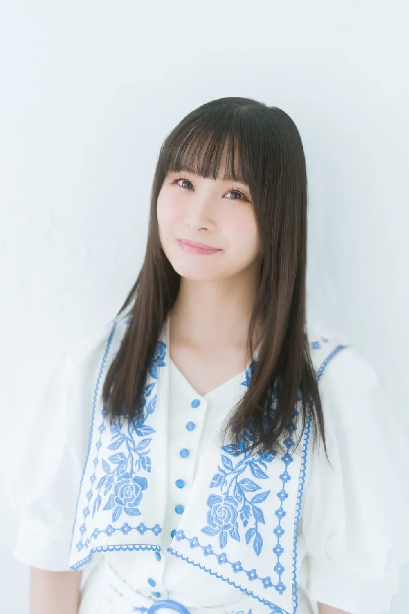

분류:
일본 여성 성우 | 역대 성우 그랑프리 표지 모델 | 교토부 출신 인물 | 1995년 출생 | 2015년 데뷔 | 러브 라이브! School idol project series/역대 출연진 | 성우 출신 유튜버 |
4월 17일 출생 |
교토부 출신 |
유튜브 사용자 |
인스타그램 사용자
이 문서는 「시원찮은 그녀를 위한 육성방법」에 등장하는 동명의 캐릭터에 대한 내용을 다루고 있습니다. 시원찮은 그녀를 위한 육성방법/등장인물에 대한 내용은 시원찮은 그녀를 위한 육성방법/등장인물 문서를 참조하세요.
| 사가라 마유 相良茉優｜Mayu Sagara | |
 | |
| 본명 | 사와다 마유 (澤田茉優, Mayu Sawada) |
| 출생 | 1995년 4월 17일[1] (31세) |
| 교토부 | |
| 국적 | 🇯🇵 일본 |
| 직업 | 성우 |
| 신체 | 155cm, 220mm, O형 |
| 취미 | 노래방, 맛집 찾기, 포커, 경마, |
| 특기 | 주판, 다트, 테너 색소폰 |
| 별명 | 마유치[2], 사가라, 공장장(코죠초)[24] |
| 활동 시기 | 2015년 ~ 현재 |
| 소속 유닛 | Prima Porta[3] |
| 소속사 | 링크 플랜(2015~2020.09.30) 디지털 더블(2020.10.01.~2024.05.12) HIGH PINE(2024.07.~2025.10.31) 프리랜서(2025.11.01.~)[4] |
| 링크 |    |
1. 개요
일본의 여성 성우. 링크 플랜, 디지털 더블, HIGH PINE을 거쳤고, 2025년 10월 31일에 HIGH PINE을 퇴사해 11월 1일부터 프리랜서로 활동하고 있다.[5]2. 커리어
2015년 성검사의 금주영창에서 학생 역을 맡으면서 성우 활동을 시작하였고, 2016년 애니메이션 아이돌 메모리즈에서 shadow의 리더 카지와라 미쿠 역을 맡으면서 첫 주연 캐릭터를 연기하였다.2017년에 니지가사키 학원 스쿨 아이돌 동호회의 일원 나카스 카스미 역을 맡게 되면서 러브라이브 프로젝트에 합류하게 되었다.
3. 여담
- 교토 출신이라 간혹 당황하거나 급한 상황에는 관서 사투리가 자연스럽게 나오기도 한다.
- 운전면허를 보유하고 있다. 고등학생 때 취득했는데[6] 운전은 거의 하지 않아서 장롱면허 상태라고 한다.
- 2018년 10월 31일부터 트위터 활동을 시작했다.
- 스키야에서 주로 즐겨 먹는다고 한다. 동료들의 증언에 따르면 맛집에 굉장히 빠삭하다고.
- 중학교 때 주위 사람들과 말을 안 하고 살았던 시기가 있었다고 한다.[7] 마음을 다잡고 아는 사람이 아무도 없는 고등학교로 가서 새로 친구를 사귀려고 했으나 실패했다고 한다.
- 잠이 많은 편이라고 한다. 하루 12시간 정도 자야 제대로 잔 기분이 들 정도라고. 아무래도 일상에서는 꽤나 느긋한 성격인 듯.
전형적인 겜덕후 라이프 스타일[8]
- 나체 수면을 한다고 본인이 밝혔다. 게다가 마유치의 집에 초대받아서 숙박해 본 오오니시 아구리가 아침에 깨우러 가 보니 진짜 알몸으로 자고 있어서 깜짝 놀랐다고 트윗에 올려서 확인까지 되었다.
- 본격적으로 애니메이션에 빠지기 시작한 계기는 초등학교 6학년 때 마법소녀 리리컬 나노하를 시청한 것. 고등학교 1학년 때부터 성우로 진로를 마음먹고 양성소 오디션을 보러 다녔다고 한다.
- 니지가사키 학원 스쿨 아이돌 동호회의 나카스 카스미 역할을 맡은 이후에 성캐일치를 위해 머리를 단발로 잘랐다.[9] TGS에서 스쿠스타가 첫 공개됐을 때와 지금을 비교하면 확연히 알 수 있다. 카스미에 대한 사랑도 엄청난데, 스쿠스타에서는 지금까지 등장한 모든 카스미를 모으고 있고, 한계돌파는 물론 특훈 파라미터도 모두 개방할 정도이다. 거기에 더해 스쿠스타 채널에서 카스미 채널을 1등으로 올리기 위해 합숙 티켓을 전부 투입하는 등의 시도를 했으나 달성하지 못해 아쉬워하는 트윗을 남기기도 했다. 현재는 카스미 키즈나작을 하는 중이라고.
- 인터뷰에서 처음부터 카스미를 염두에 두고 오디션을 봤던 것이 아니었다고 발언했다. 본인이 본래 음성이 낮은 톤이기 때문에 카스미처럼 귀여운 컨셉의 캐릭터보다, 보이쉬하거나 어른스러운 역할의 캐릭터를 염두에 뒀었다고.[10]
- 러브 라이브 시리즈를 처음 접한 것은 러브 라이브! 애니메이션 1기. 당시 마유치는 방송되는 애니메이션 전부 3화까지는 보고 나서 끝까지 볼지 판단하곤 했는데,
전형적인 애니메이션 오타쿠 패턴러브라이브 애니메이션은 3화까지 보고 계속 봐야겠다고 판단해서 끝까지 시청한 것이 러브라이브를 접하게 된 과정이라고 한다.
- 러브 라이브 시리즈 멤버들 중 코토리, 다이아, 마리, 카린 오시라고.[11] 특히 코토리와 성우인 우치다 아야를 매우 좋아한다. μ's의 콘서트를 보면 우치다 아야가 진짜 코토리처럼 보인다며, 자신도 본인이 무대 위에서 관객들 눈에 카스미로 보였으면 하는 바램을 가지고 있다고.
- 메이플스토리, 마인크래프트 등 다양한 게임들을 즐겨 한다. 마인크래프트 같이 자유롭고 평화로운 게임을 좋아하는 반면 몬스터 헌터 시리즈, 스매시브라더스 시리즈처럼 싸우는 게임을 좋아하지 않는다고 한다.
- 전차 안에서도 집중하고 스쿠페스를 할 정도의 굉장한 프로 스쿠페스러인 듯하다. 무음페스도 가능하다고 한다. 관련 일화로 타나카 치에미가 일을 끝내고 집에 돌아갈 때 지하철에서 어떤 여자가 스마트폰을 무릎에 올린 채 스쿠페스를 검지로 빠르게 누르면서 플레이를 하는 걸 보고 대단하다고 느낀 순간, 어디선가 본 적 있는 얼굴이라는 생각이 들어 자세히 보니 마유치였다고(...). 트위터 개설 이후에는 자주 스쿠페스 가챠 결과나 풀 콤보 달성 사진을 트위터에 올린다. 2019년 9월 실력 클래스에서 엑스퍼트++[12]을 획득했다. 스쿠스타 발매 이후에는 카스미 관련 스크린샷과 함께 트윗을 올리기도 한다.
FFF에서 스쿠스타 플레이 중 금은카롱 부족하다고 게임을 향해 독설을 날린 적도 있다.
- 스쿠스타의 전격 온라인 분실 방과후 챌린지에서 마리오 카트 대결을 한 적이 있는데[13] 실력차를 보여주며 2연속 1위를 달성, 세 번째는 실력차에 멤버들이 볼멘소리를 하자 10초 대기 후에 출발했는데도 2등을 하는 기염을 토했다.
- 개인 방송 FUN! FAN! FACTORY에서도 수시로 철야 게임 실황 방송을 한다. 2021년 2월 15일 오리와 눈먼 숲 & 마피아 데피니티브 에디션 7시간 방송을 시작으로, 4월 17일 생일 특별 방송 후 마피아 데피니티브 에디션을 5시간 30분 방송. 니지가사키 3rd 라이브가 끝난 바로 다음날인 5월 10일 바이오하자드 빌리지를 6시간 동안 방송하였으며[14], 불과 이틀 후인 5월 12일 22시 30분부터[15] 7시간 15분, 이어 5월 17일 3시간 동안 방송하여 클리어. 고스트 오브 쓰시마로는 13시간 방송을, 세키로로는 9시간 방송을 하는 위업을 달성했다. 그리고 Cult of the Lamb으로 2022년 12월 24일 18시부터 25일 10시 47분까지 중간에 잠시 밥 먹는 시간을 포함하여 장장 16시간 47분 동안 방송을 하는 신기록을 달성했다.1부2부
- 활발한 스트리머 활동에 22년에는 스트리머 마유치로서 인터뷰를 하기도 했다. 본인 왈 성우가 되지 않았다면 스트리머를 했을 거라고. 인터뷰
- 무라카미 나츠미와 함께 게임을 자주 한다.
- 친한 성우는 함께 루미커리 라디오에서 활동한 오오니시 아구리, 우치다 슈우가 있다. 이들과는 마기아 레코드 및 니지가사키 학원 스쿨 아이돌 동호회에서 함께 활동 중.
- 우치다 슈우와는 2018년 연말연시 연휴에 본가가 오스트레일리아 시드니에 있어서 가족과 함께 지내지 못하는 우치다 슈우를 교토의 고향집에 초대해서 일주일 정도 함께 지내고 여행도 다니면서 아주 절친한 사이가 되었다고 한다. 애니메이션 취향도 비슷해 코드기아스, PSYCHO-PASS 극장판을 보러 가거나, 교토 여행#, 한국 여행[16]##을 가기도 하는 등 어울려다니는 모습이 자주 띄는 편.
- 우치다 슈우가 방송에서 언급한 에피소드에 의하면 이후로도 종종 사가라 마유의 집에 놀러 가는 듯한데 방바닥이 늘 어질러져 있다고 한다(...). 그래서 대신 청소를 해줄 때도 있을 정도라고.
- 니지가사키 학원 스쿨 아이돌 동호회에서 함께 활동 중인 마에다 카오리와도 친하다. 작품에서 서로의 담당 캐릭터가 절친 사이라 자주 엮이기도 하고, 실생활에서는 둘 다 겜덕후에 털털한 성격까지 비슷한 점이 많다. 서로 생활 습관도 비슷해서 서로의 집에 놀러 가면 정말 부담 없이 편하게 있을 수 있다고. 마에다 카오리가 교토에 있는 사가라 마유의 친가에 놀러간 적도 있다.
- 2022년 연초에는 마에다 카오리의 집에서 니지동 멤버가 모여서 신년회를 했는데, 첫 날에는 다들 북적거리는 분위기 속에서 마유치 혼자 6시간 동안 숙면을 취했다는 일화도 있다. 그리고 저녁에 일어나서는 과음으로 만취, 다음 날 오전 쯤에 정신이 들었는데 다른 동료들은 모두 돌아간 뒤였다고... 그리고 이후 마유치는 3박 4일 동안 마에다 카오리의 집에서 놀다가 돌아갔다고 한다. 이에 대해 마에다 카오리는 '내년에는 일주일 쯤 있어도 돼'라고 할 정도로 서로 편한 격이 없는 사이이다.
- 또 다른 니지동 멤버인 쿠보타 미유와는 동갑내기에 식성이 비슷해서 자주 밥을 같이 먹으러 다니는 사이이다. 사가라 마유는 쿠보타 미유가 소속된 그룹 i☆Ris의 팬으로, 콘서트도 여러 번 다녀왔다고. 쿠보타 미유 왈 '항상 텅 비어 있는 내 몫의 관계자석을 채워주는 사람'이라고 한다.
- 마기아 레코드에서 히로에 치하루를 담당하면서 마기아 레코드의 플레이 유저로 밝혀졌는데 본인이 담당한 치하루를 뽑은 것을 인증하거나 2주년 회장에서 치하루의 코스프레 복장을 하고 행사에 참여하는 등[17] 자신이 참여한 작품에 대한 애정을 보여준다.
- 니지가사키 학원 스쿨 아이돌 동호회 애니메이션 1기에서 카스미가 쿠페빵을 씹어 먹으며 분노하는 장면을 연기할 때, 녹음 현장에 진짜 쿠페빵을 가져와 씹어 먹으며 연기했다고 한다.
- 고양이 알레르기가 있지만 고양이를 좋아한다. 사시데 마리아의 집에 자주 놀러가면서 고양이랑 논다고 한다. 사시데 마리아의 집을 평가하길 낙원이라고.
- FUN! FAN! FACTORY 구독자를 대상으로 마인크래프트 서버를 열어 마유치 월드를 건설 중에 있다.[18] 구독자들도 함께 플레이하는 중인데, 2021년 1월 4일경에 어느 테러 유저가 들어와 테러를 감행했고 자동 백업에 따라 1월 2일 아카이브로 되돌아가는 해프닝이 벌어지기도 했다. 참고로 여기에 앵무새를 잡아오거나 도코데모 카스밍을 제작하던 사람도 있었는데 복구로 인해 날아간 게 대다수라고...
- 프라오레 유튜브 채널에서 그녀의 심상치 않은 인라인 스케이트 및 피겨 스케이트 실력을 볼 수 있는데, 초등학교 1~2학년 때 피겨 스케이트를 배웠다고 한다. 다만 그 이후 링크장이 문을 닫는 통에 더 배우지 못했고, 지금은 스핀까지는 되지만 점프는 안 된다고 밝혔다.
인라인 스케이트는 고인물 수준으로 잘 탄다.
- 니지가사키 2nd 라이브는 코로나바이러스감염증-19 방역 관계로 무관객 상황에서 진행됐는데, 이런 낯선 환경에 솔로 파트 첫 번째로 무적급 빌리버가 배정되면서 긴장해버린 마유치가 초반부 가사를 잊어버리고 제대로 부르지 못하는 상황이 벌어지기도 했다. 마지막 인사 파트에서는 눈물을 흘리며 '카스미에게 너무 미안하다'라고 자책했을 정도. 연말 개인방송에서 한 팬이 '2020년 가장 후회되는 일은?'이라고 묻자 2nd 라이브를 꼽으며 '아직도 꿈에 나올 정도'라고 말하며, 리허설에서 별 문제없다고 본 공연에서 항상 잘 되는 것이 아니라는 사실을 배웠다며 말하기도 했다. 그러면서 꼭 리벤지하겠다고 밝혔고, 3rd 라이브에서는 성공적으로 무적급 빌리버 라이브를 마치는 데 성공했다. 그리고 마지막 인사 순서에서 드디어 부담감에서 해방된 것 같다며 또 한 번 눈물을 흘렸다.
- 니지가사키 3rd 라이브 때 Poppin' Up! 의상을 시착용하고 양말을 신다가 등 단추가 터져버리는 해프닝이 있었다고 한다. 이후 개인방송에서 "배 쪽이 아니라 등 쪽이 터진 것에서 볼 때, 속옷을 제 사이즈로 사서 가슴이 커진 것 같다"며(...) 이유를 설명하기도 했다.
고무줄 체중으로 유명한 마유치라 아무도 믿지 않는 게 함정어쨌든 이런 에피소드까지 가감 없이 밝힐 정도로 털털한 성격이다. - 이런 털털한 성격 덕분에 사실상 각종 논란에서 자유로운 멤버 중 한 명으로, 개인 팬미팅에서 '자신이 어프로치하면 사귈 것인가?'라는 질문을 던졌을 때 무려 40프로에게 거절당하는 (...) 위업을 달성하기도 하고, 남자 연예인과 파칭코를 같이 하는 장면이 포착되어도 아무도 민감하게 반응하지 않으며[19], 자칫하면 위험할 수도 있는 발언을 능청맞게 넘어가는 등[20] 사가라씨라면 뭘 해도 용서가 된다는 이미지. 이런 이유로 니지가사키 멤버 중 누군가가 사진집을 낼 경우 멤버의 사진집 감상은 마유치가 주로 맡는다.
- 이런 털털한 성격을 네타 삼아 만들어진 개인 방송이 바로 '안됩니다! 마유 아가씨'이다. 지나칠 정도로 털털한 마유치가 누가 봐도 위화감이 도는(...) 고풍스러운 아가씨 말투를 써 가며 진행을 하는 모습이 포인트. 방송 중 '아가씨의 식탁'이라는 타이틀로 간단한 식사거리를 먹는 코너가 있는데, 너무나 복스럽게 음식을 먹어치우는 마유치의 모습이 개그 포인트 겸 매력 포인트. 영상의 37분 20초 부근부터 한번 보도록 하자. 쿠보타 미유가 게스트로 출연한 화에서 칠초죽[21]을 먹는데, 방송을 의식하고 적당히 먹다 내려놓는 쿠보타 미유와 폭풍처럼 한 그릇을 다 먹어치우는 마유치를 볼 수 있다.
- 2022년 8월 1일에 발열 증상을 보였고, 2일에 코로나바이러스감염증-19 양성 판정이 나왔다. # 이후 회복해 8월 13일부터 활동에 복귀하였다. #
- 2026년 9월 5일 개최되는 러브 라이브! 슈퍼스타!! Liella 유이죠 체육대회 1일차에 응원 대표로 출연한다.
- 2026년 10월 17일 서울 마포구 연남스페이스에서 생애 첫 단독 내한 팬미팅 'LANDING ACTION WONDER FLIGHT : FLT 002 - SAGARA MAYU FAN MEETING'을 성황리에 개최하였다. (상세 내용은 아래 하위 문단 참조.)
3.1. 2026년 첫 단독 내한 팬미팅 (전설의 한국공장 개소 및 순대국밥 대첩)
2026년 10월 17일, 서울 마포구 연남동에 위치한 소극장 '연남스페이스'에서 생애 첫 한국 단독 팬미팅 《LANDING ACTION WONDER FLIGHT : FLT 002 - SAGARA MAYU FAN MEETING》이 낮부(1부)와 밤부(2부) 총 2회차에 걸쳐 개최되었다. 소극장 특유의 아담한 규모 덕분에 무대와 객석의 거리가 극도로 가까웠으며, 사가라 마유 특유의 노빠꾸 예능감과 털털함, 그리고 한국 물붕이(공장원)들의 찰진 티키타카가 어우러져 일본 성우 내한 역사에 길이 남을 레전드 에피소드들을 대거 양산했다.
- [사가라 FFF 한국공장 개소 및 화환 본인 인증] 공연장 입구에는 한국 팬들이 십시일반 모금하여 세운 '축 한국공장 개소 - 사가라 FFF 한국공장(쌀 50kg 드리米)' 쌀화환과 노란 장미 및 한복 일러스트로 꾸며진 축하 화환들이 늘어섰다. 특히 쌀화환 배너의 '이달의 우수사원' 명단과 노란 화환 리본에는 열혈 카스미 오시인 박효빈(본명 및 일본어 닉네임 'びにー')의 이름이 양쪽 모두 당당히 새겨졌는데, 행사 후 마유치 본인이 직접 이 화환들을 사진으로 찍어 공식 인증샷까지 남기면서 모금에 참여한 한국 공장원들을 무아지경의 성불 상태로 몰아넣었다.
- [1부(낮부) 오프닝: 7분 지각, 요비스테("사가라!"), 그리고 지옥철과 닭한마리]
- 시작 시간에서 약 7분이 지나도 등장하지 않아 관객들이 "역시 마유치, 여기서도 재미를 보여주는 거냐(?)"라며 박수를 치다 벙쪄 있던 찰나, 호기롭게 등장하며 "뭐 때문에 늦었다 스미마셍!"이라며 유쾌하게 포문을 열었다.
- 한국인 관객이 잔뜩 모인 것을 보고 반가워하며 "한국에서는 본인을 뭐라고 부르냐"고 질문했는데, 객석에서 '마유치' 못지않게 "사가라!!"라는 우렁찬 외침이 쏟아지자 "한국은 요비스테(호칭 없이 성으로만 부르기)로 부르냐고 ㅋㅋㅋ"라며 빵 터졌다. 그러더니 "니들 맘대로 불러라"라며 쿨하게 허락했다. 또한 무대 초반 브금(BGM)이 깔리지 않자 "브금 없냐, 브금 없으면 약간 빡센데..."라고 투덜대다 갑자기 브금이 크게 터져 나오자 화들짝 놀라는 개그를 선보였다.
- 과거 우치다 슈우(슈짱)와 함께 한국 여행을 왔던 추억을 회상하며, 이번에 한국 지하철(만원 전철, 지옥철)을 탔는데 일본이랑 똑같더라는 소감을 남겼다. 특히 한국어를 모르는데도 열차 출발 직전 나오는 안내방송이 "무리한 승차 하지 말라"는 뜻인 걸 본능적으로 단번에 알아들었다고 해 폭소를 유발했다.
- 전날 저녁에는 한국 명물인 '닭한마리'를 먹었는데 전자 번호표로 부르는 시스템 속에서 생각보다 덜 기다리고 들어갔으며, 눈앞에서 닭이 가위로 잘리는 모습을 보며 마신 스프(육수)와 떡이 엄청 맛있었다고 극찬했다. 다만 벽에 한국어로 뭐가 잔뜩 써 있었는데 토핑 추가 메뉴인 것 같았으나 읽지 못해 그냥 안 시켰다고 하며 "한국 물붕이들은 맛있는 거 많이 먹는구나"라며 부러워했다.
- [1부 사연 코너 & 올해의 게임(똥겜?) 이상형 월드컵]
- 사연 1 (오타쿠적 시선과 i☆Ris 직관): 팬서비스와 리액션이 좋은 이유가 캐릭터나 동료 성우 사진집(...)을 보는 오타쿠적 시선 때문이냐는 질문에, 절친 쿠보타 미유가 속한 그룹 i☆Ris 공연을 보러 갔을 때 사진 촬영 가능 타임에 너무 신나서 찍는 바람에 그 모습이 SNS에 퍼져 약간 부끄러웠다는 비하인드를 풀었다.
- 사연 2 (인간관계와 배신 극복법): 과거 주변에 마음을 닫았던 적이 있던 마유치에게 '최근 배신을 당해 힘든데 어떻게 다시 마음을 열었냐'고 묻는 진지한 사연이 올라왔다. 이에 마유치는 ① 환경을 바꿔보는 것(배신한 사람과 떨어져 새로운 환경에서 새 관계를 쌓으면 낫고, 거기서도 배신당하면 어쩔 수 없는 것 ㅋㅋㅋ), ② 사람을 너무 믿지 않는 것(애초에 사람을 너무 믿지 않도록 하면 배신당했을 때 '아~ 그럼 별수 없지~' 정도로 가볍게 넘어갈 수 있다)이라는 지극히 현실적이고 마유치다운 쿨한 해법을 제시했다.
- 사연 3 (간사이 자전거 코스 추천): 간사이에서 일하게 된 라이더 팬의 질문에, 정작 간사이도 아니고 본인도 직접 안 가봤다는(...) 혼슈와 시코쿠를 잇는 대교(시마나미 카이도로 추정)가 멋있다고 추천했다. 반면 본인의 고향인 교토 시내는 일방통행이 많고 도로가 좁아 본인도 운전할 때 무섭고 차들이 클락션을 많이 울리니 시내 라이딩은 비추한다고 현실 조언을 남겼다.
- 사연 4 (유튜브 게임 방송 기준): 운전수와 길 안내를 각각 분담하는 협동 게임을 친구와 함께 다음 주나 11월 초쯤 라이브로 하고 싶다며, 재밌어 보이면 하고 싶어지니 추천 게임을 X(트위터)에 많이 올려달라고 당부했다.
- 게임 이상형 월드컵: 올해 플레이한 시뮬레이션·타이쿤·정리 게임들 중 최고를 뽑는 코너. 최근에 한 '라멘집 타이쿤(맥주 서빙을 일일이 해야 하고 거품 빠진 걸 주면 클레임이 걸려 빡세지만, 미리 따라놓고 냉장고에 넣으면 클레임이 안 걸린다는 꼼수를 배워 다다음주쯤 시청자 참여로 할 예정)'이 결승까지 갔으나, 최종 우승은 이 장르에 빠지게 만든 근본 게임인 '도서관 정리 게임'을 뽑았다. 반면 가장 빡치게 한 최악의 게임으로는 《이용약관에 동의하고 싶어》를 꼽으며 다시는 보기 싫을 정도로 빡쳤다고 치를 떨었다.
- [1부 소지품 빙고 코너: 전설의 '옆자리 헬멧좌'와 박효빈의 3연속 통역 어시스트 대첩]
- 관객들이 현장에 실제로 가지고 온 물건을 확인해 빙고를 완성하는 코너. 응원봉(블레이드)은 시작하자마자 가볍게 통과했다.
- [레전드 명장면 탄생] 그러던 중 객석 앞열의 한 남성 팬(디시 닉네임: 위즈우익수스위스)이 무려 실제 공사장 안전모(헬멧)를 들고 온 것을 마유치가 발견하고 "어디 바이크 헬멧이냐?"고 기습 질문을 던졌다. 갑작스러운 질문에 당황한 헬멧 팬이 말문이 막히자('스피킹 0개국어의 저주'), 바로 옆자리에 앉아 있던 박효빈이 그동안 갈고닦은 일본어 실력을 발휘해 즉석에서 "코지!(工事, 공사!)"라고 대신 크게 외쳐주었다! 이를 들은 마유치가 "공사?!!"라며 빵 터져 웃음을 터뜨렸고, 이어 "그럼 일 끝나고 온 거냐, 끝나고 일 가는 거냐"고 묻자 또다시 박효빈이 "나이데스, 아시타?(아뇨, 내일?)"라고 찰떡같이 방어해 주었다. 결정적으로 마유치가 "근데 왜 내일 일하는데 오늘 헬멧을 가지고 있는 거냐"고 묻자, 박효빈이 사가라 팬덤(사가라 공장) 밈을 적용해 "코죠초(工場長, 공장장)이니까!!"라고 완벽한 카운터 드립을 날렸고, 마유치가 이를 듣고 또 한 번 자지러지게 폭소하며 현장 관객 전원이 인정한 낮부 최고의 명장면이 탄생했다.
비록 제비뽑기 운은 없었지만 옆자리 헬멧좌를 어시스트하며 마유치와 1대 1 만담을 주고받은 박효빈의 완벽한 성덕 쌀먹 승리였다. - 이외에도 라멘집 쿠폰(한국은 종이 쿠폰이 거의 없어 반절 빈 스탬프 카드는 불인정되었다가, 한국어로 된 '히노아지' 라멘집의 미니부타동 쿠폰과 타 매장의 교자 할인권이 나와 마유치가 "라멘 쿠폰이 아닌데 수상하다"고 의심했으나 스태프 판정으로 인정), 마권(기념 마권을 소지한 팬 등장으로 인정), 장우산(다음 날 비 예보 덕분에 성공), 도보 30분 산책해서 당일권으로 걸어온 사람, 당일 생일자, 라이브 티셔츠, 오늘 특전을 제외한 기존 아크릴 스탠드, ICOCA(이코카) 교통카드, 러브카(TCG) 레어 카드, 친필 사인이 들어간 마유치 사진집, 치비마유쨩 인형 등이 줄줄이 쏟아져 나오며 빙고를 완성했다. (반면 교토 관련 물건은 부적뿐이라 불인정, CD 앨범 소지자는 0명이라 실패했다.)
- 여담으로 1부 라이브 종료 및 사인회 추첨 후 마유치가 그대로 퇴장해 버려 관객들이 "어? 단체사진 안 찍나? 엥?" 하며 술렁였는데, 스태프가 나와 "여러분, 우리 하나 빼먹은 거 같아서 마유치 다시 불러봅시다(...)"라며 마유치를 무대로 다시 소환해 단체사진을 찍는 훈훈한 찐빠(?) 해프닝이 있었다.
- [쉬는 시간: 경의선숲길 '카스카스(Cass×2) & 얀데레 아유무' 제단 사건]
- 1부와 2부 사이 브레이크 타임 때 연남동 경의선숲길 공원 벤치에 한국 물붕이들이 구축한 나카스 카스미 굿즈 제단이 차려졌다.
- 그런데 제단 한구석에 놓인 한국 맥주 '카스(Cass)'가 처음엔 1캔이었다가 잠시 후 2캔으로 증식하면서, 카스미가 세상에서 제일 싫어하는 별명인 '카스+카스 = 카스카스(かすかす)'를 물리적으로 고증해 내는 기행이 벌어졌다(...).
- 더욱 소름 돋는 킬링 포인트는 인형 배치였는데, 타카사키 유우의 머리띠를 착용한 카스미 네소베리 바로 등 뒤에 우에하라 아유무 인형을 딱 붙여놓아 니지동 팬덤의 유서 깊은 '아유무 얀데레 밈'을 완벽하게 재현해 놓은 것. 제단 주인 역시 의도적으로 노리고 배치한 것임을 쿨하게 시인해 현장의 물붕이들을 폭소케 했다.
- [2부(밤부) 토크 & 사연: 스파(슈퍼?) 아로마 마사지 폭행 썰과 한국 카지노의 충격]
- 아로마 마사지 '전신 췌인지' 폭행(?) 사건: 2부 시작부터 역대급 입담이 터졌다. 전날 몸이 굳은 것 같아 스파(처음에 '슈퍼'와 발음을 헷갈려 관객들이 '스파!'라고 교정해 주는 참사 발생)에 가서 아로마 마사지를 받았는데, 살집이 있는 아주머니 세신사분이 오이를 미친 듯이 슬라이스해서 얼굴을 막 씻기더니 오이팩을 다닥다닥 붙여주었다고 한다. 부드러운 마사지를 예상했으나 갑자기 억세게 때밀이와 마사지가 들어오자 마유치가 "아아아아아로마아아아아!!" 하고 비명을 질렀고, 아주머니는 "팍! 빠!" 소리와 함께 마치 얻어맞는 것처럼 10~20번을 찰지게 내리치며 "췌인지! 췌인지! 전신 췌인지!!"를 외쳤다고 한다(...). 마유치는 "마사지가 아니라 대부분 맞은 것 같다"며 한국식 마사지의 매운맛을 생생하게 재현해 장내를 초토화시켰고, "일본에서 왔거나 한국에서 아직 안 해본 놈들은 꼭 맞아보라(통역사는 순화해서 '받아보라'고 번역)"며 강력 추천했다.
- 포커·경마·파칭코(갬블) 사연과 파라다이스 시티: 마유치의 3대 갬블 취미(정작 본인은 파칭코는 취미가 아니라며 능청스럽게 구라를 쳤다) 중 포커(GiGO 앰버서더 활동 및 《포커 체이스》의 주인공 키라 사유키 담당을 계기로 앱을 깔았다가 푹 빠짐)는 한국에서 하기 힘든 취미라는 사연이 올라왔다. 이에 마유치가 "응? 한국에 파라다이스 시티 있지 않냐?"고 되물었다가, 관객들로부터 "한국인은 외국인 전용 카지노에 못 들어가고 내국인 출입 가능 카지노는 강원랜드 단 1곳뿐"이라는 사실을 듣고 "왜?! 몰랐어!!"라며 진심으로 경악했다. 갬블을 좋아하는 이유는 "이기면 기분이 매우 좋고, 들킬지도 모른다는 두근거림과 상대를 꺾을 때의 스릴을 멈출 수 없어서"라며, 한국에서 못 하면 일본에 올 때 어뮤즈먼트 파크 같은 합법적인 곳에서(범죄 아니니까 ㅋㅋㅋ) 해보라고 권유했다.
- 해외 이벤트의 매력과 한국 먹방(간장게장, 요거트): 해외 이벤트에 오면 현지 팬들과 일본에선 할 수 없는 이야기(
본인 왈 그런 건 딱히 없는 것 같다고 덧붙임)를 나누고, 특히 한국 팬들은 일본인보다 리액션이 크고 감정을 솔직하게 드러내서 그걸 보는 게 너무 좋다고 밝혔다. 한국에서 먹은 것 중에는 닭한마리 속의 떡과, 생크림처럼 맛있었던 삼각형 요거트(비요뜨류)를 꼽으며 "나는 휘핑크림 짜는 통을 입에 직접 대고 짜 먹을 정도로 생크림을 좋아한다"고 고백했다. 아직 못 먹어본 음식 중 가장 먹고 싶은 것은 간장게장이라고.
- [2부 '도와주세요 쩝쩝박사(쪼푸쪼푸 박사)' & 무대 위 뚝배기 순대국밥 새우젓 생중계 대참사]
- 코너 제목인 '쩝쩝'과 '박사'가 일본어로 뭔지 물어보며 "쪼푸쪼푸 박사~"라고 발음하는 귀여운 모습을 보여주었다. 마요네즈와 매운 것을 못 먹는 마유치를 위해 사전 앙케이트로 추천받은 한국 음식(갈비찜, 육회탕탕이 등)을 소개하던 중, 매운 걸 좋아하는 관객들을 향해 일본의 매운 전골/라멘집인 '아카카라(赤から)' 10단계에 도전해 보라고 역추천하기도 했다.
- [대망의 순대국밥 실물 등판] 이어 마지막 추천 메뉴로 순대국밥이 화면에 떴는데, 단순히 사진 설명만 하고 넘어갈 줄 알았으나 갑자기 무대 위로 근본 은쟁반(원쟁반)에 받친 펄펄 끓는 진짜 뚝배기 순대국밥 실물이 배달되어 사상 초유의 팬미팅 국밥 시식 생중계가 벌어졌다!
- [새우젓 풀투하 시도에 경악한 한국 물붕이들] 쟁반 위의 새우젓을 본 마유치가 "이건 뭐냐, 어디다 넣냐"고 묻자 관객들이 "국물에 넣는 소금 대용"이라고 알려주었다. 그러자 마유치가 새우젓 한 접시를 한방에 국물에 통째로 다 털어 넣으려 했고, 기겁한 한국 관객 전원이 일제히 손사래를 치며 "다메(안 돼)!!!!"라고 절규하는 진풍경이 펼쳐졌다.
- 일단 순정 국물과 고기부터 맛보며 "맛있다, 고기가 사각사각(쫄깃)하다"고 감탄한 마유치는, 새우젓을 그냥 집어 먹어보더니 눈을 반짝이며 "이거 그냥 츠마미(술안주)잖아! 술에 맞지 않아? 젓갈 같은 맛이라 술안주 아니냐"고 극찬했다. 그러더니 기어코 새우젓의 반절 이상을 국물에 왕창 때려 박아 또 한 번 한국인들을 경악하게 만들었다(...). 하지만 원래 짜게 먹고 다대기(타래)도 다 넣는 일본인 식성 덕분인지, 고슬고슬한 공깃밥까지 야무지게 국물에 말아서 한 입 먹더니 "밥을 딱 말아 먹으니까 간이 딱 맞는다!"며 폭풍 먹방을 선보여 관객들을 감탄케 했다.
- [2부 '사가라에 도전! VS 사가라' 5종 대결 & 라이브/배웅회]
- 사전 앙케이트로 모집한 '자신이 사가라 마유에게 완벽하게 이길 수 있는 종목'으로 관객과 일기토를 벌이는 코너.
① 옷 빨리 개기: 평소 방이 더럽다는 오해(?)를 많이 받아서인지 "옷 정리는 내가 마유치보다 잘할 것 같다"는 앙케이트가 쏟아졌고, 가장 자신 있게 손을 든 자취생 여성 팬(눈나)이 등판해 빛의 속도로 옷을 개며 압승, 상품으로 옷걸이를 획득했다.
② 포켓몬 맞추기: 힌트를 보고 포켓몬을 맞추는 게임으로 마유치가 사실상 다 맞췄으나 참가자에게 포켓몬 인형을 증정했다. (여담으로 이 코너 도중 객석의 한 빌런이 눈치 없이 시즈쿠 누이를 들며 '냐스' 거리는 뇌절을 시전해 시즈쿠 오시들의 눈살을 찌푸리게 했으나, 마유치가 프로답게 먹금으로 대처했다.)
③ 높은음(고음) 내기: 아버지와 함께 온 대학 수험생 딸(베이스 연주자)이 뽑혀 나와 처음엔 긴장했으나 갈수록 엄청난 고음을 뽑아내며 승리해 목캔디를 상품으로 받았다. 퇴장 길에 마주친 팬들이 다 함께 "수험생 파이팅!"을 외쳐주며 훈훈함을 더했다.
④ 온라인 틀린그림찾기: 화면에 QR코드를 띄워 뽑힌 4명만 방에 입장시켜야 하는데, 스태프가 QR을 먼저 띄워버리는 바람에 안 뽑힌 관객들이 대거 난입하는 참사가 벌어졌다. 이에 마유치가 WWE 반 UFC 반의 텐션으로 "나가! 나가!!"라고 사자후를 질렀고, "흥, 너네 이렇게 이겨도 부끄러운 거다!"라며 게임을 시작했으나 알고 보니 아예 다른 방(...)이라 난입했던 팬들은 이미 나가줬던 것이 밝혀져 마유치가 급히 사과하며 웃음을 자아냈다. 3트 끝에 정상 진행되어 혼자 27개 중 15개를 맞춘 팬이 햄버거 세트를 가져갔다.
⑤ 가위바위보: 최후의 승자에게 치킨 쿠폰이 증정되었다. - 라이브 코너 & 한국어 콜('사랑이란?'): 낮부와 밤부 모두 《Smile my Style》, 《星空ワンダー(호시조라 원더)》, 《+MUSIC, +LOVE!!》 총 3곡을 열창했다. 특히 《+MUSIC, +LOVE!!》 가사 중 마유치가 "愛では?(아이데와? / 사랑이란?)"라고 던지면 관객들이 "最高の人生!(사이코노 진세! / 최고의 인생!)"라고 외치는 콜 파트에서, 마유치가 이를 한국어로 부르고 싶어 하자 관객들이 다 같이 "사랑이란?"(처음엔 '사랑은'과 헷갈렸으나 '사랑이란'으로 통일)을 가르쳐주었다. 본 무대에서 마유치가 완벽한 발음으로 "사랑이란~?"을 외치고 관객들이 "사이코노 진세!!"로 화답하며 대성공을 거두었다.
- 배웅회(오미오쿠리): 소극장 구조상 대기열 위쪽까지 목소리가 다 들릴 만큼 가깝고 회전율이 빨라 한마디씩만 빠르게 주고받아야 했음에도, 카스미 네소베리를 흔들며 "카스밍 오시예요!", "꼭 또 와주세요!"라고 외치는 팬들에게 나카스 카스미 특유의 하이톤 목소리로 "아리가또~"를 연발해 주며 한국 공장원들에게 평생 잊지 못할 행복을 선사했다.
- 사전 앙케이트로 모집한 '자신이 사가라 마유에게 완벽하게 이길 수 있는 종목'으로 관객과 일기토를 벌이는 코너.

연남스페이스 입구에 부착된 한복 사가라 마유 공식 포스터

'축 한국공장 개소' 사가라 FFF 한국공장 쌀 50kg 화환과 우수사원 명단

마유치 본인이 직접 촬영해 인증샷을 남긴 노란 장미 화환

사가라 FFF 한국공장 임직원 일동이 보낸 한복 일러스트 화환

연남스페이스 내한 팬미팅 전체 관객 단체사진
.webp)
경의선숲길에 차려진 전설의 '카스카스(Cass 2캔) & 얀데레 아유무' 제단
4. 활동 내역
4.1. 애니메이션
- 2015년
- 성검사의 금주영창 - 학생
- 2016년
- 아이돌 메모리즈 - 카지와라 미쿠
- 2017년
- 아이돌 타임 프리파라 - 여학생, 치아코, 풍기위원, 여자
- 2018년
- 반짝이는 프리☆채널 - 다이쿠하라 유카리
- 2019년
- 귀여우면 변태라도 좋아해 주실 수 있나요? - 아나운서
- 2020년
- 러브 라이브! 니지가사키 학원 스쿨 아이돌 동호회 - 나카스 카스미
- 방과 후 제방 일지 - 여학생
- 전익의 시그드리파 - 이스루기 모에
- 2021년
- 프라오레! PRIDE OF ORANGE - 미즈사와 아야카
- 왓챠 프리마지! - 아마우리 미루키
- 2022년
- 러브 라이브! 니지가사키 학원 스쿨 아이돌 동호회 2기 - 나카스 카스미
- 텟펜!!!!!!!!!!!!!!! - 키요츠루 카나
- 2023년
- 개가 되었더니 좋아하는 사람이 날 주웠다. - 네코타니 미케
- 니지욘 애니메이션 - 나카스 카스미
- 2024년
- 니지욘 애니메이션 2 - 나카스 카스미
- 모브부터 시작하는 탐색 영웅담 - 루셰리아
- 2025년
- 볼파크에서 붙잡아줘! - 사라
- 내가 연인이 될 수 있을 리 없잖아, 무리무리! (※무리가 아니었다?!) - 아마오리 하루나
- 니트 쿠노이치와 어째서인지 동거 시작했습니다 - 키라라 벤톨
- 2026년
- 내가 연인이 될 수 있을 리 없잖아, 무리무리! (※무리가 아니었다?!) ~넥스트 샤인!~ - 아마오리 하루나
- 신의 정원이 딸린 쿠스노키 저택 - 하리마 후지노
- 여기는 내게 맡기고 먼저 가라고 말한 지 10년이 지났더니 전설이 되어 있었다. - 시어 울코트
4.2. OVA/극장판 애니메이션
4.3. 게임
- 가전소녀 - 리쿠
- 리리야의 친구 (リーリヤのおともだち) - 마유
- 릴리즈 더 스파이스 시크릿 프래그랜스 - 무네치카 히스이
- 러브라이브! 스쿨 아이돌 페스티벌 - 나카스 카스미
- 러브라이브! 스쿨 아이돌 페스티벌 2 MIRACLE LIVE! - 나카스 카스미
- 러브라이브! ALL STARS - 나카스 카스미
- 러브 라이브! 니지가사키 학원 스쿨 아이돌 동호회 두근거림의 미래 지도 - 나카스 카스미
- 마기아 레코드 마법소녀 마도카☆마기카 외전 - 히로에 치하루
- 마스터 오브 이터니티 - 루시
- 메멘토 모리 - 멜랑
- 벽람항로 - Z16
- 사우전드 메모리즈 - 토리무루
- 쓰르라미 울 적에 명 - 키미요시 카즈호
- 아오조라 언더걸즈! - 아이하라 노조미
- 오메가 라비린스 라이프 - 쿠온 유유
- SINoALICE - 성냥팔이 소녀
- 스노우 브레이크: 포비든 존 - 페니 골든
- 쿠키런: 모험의 탑 - 복숭아맛 쿠키
- 위대한 악녀: 릴리의 전략 - 카마인 메이플
- 포커 체이스 - 키라 사유키
4.4. 드라마 CD
- 춤추는 별이 내리는 레네시클 - 관중
- 요메쿠라 - 미에노 리오
- 코믹 유리히메에서 연재 중인 「루미너스=블루」의 보이스드라마 - 아키모토 아마네자막영상
4.5. 방송/라디오
- 아이돌 메모리즈 사립화음학원 방송부
- Lumina Charis의 루미커리큘럼! (2017. 07 ~ 2020. 06. 26)[22][23] - 히비키 라디오 스테이션 : 매주 금요일 19:00 갱신
- 사가라 마유의 『안됩니다! 마유 아가씨!』 - 니코니코 동화
- 사가라 마유의 FUN! FAN! FACTORY[24] - OPENREC
- 마유치의 밖에서 게임 (20.09.19 ~) - 니코니코 동화
4.6. 영화
- 때때로, 잠오지 않는 밤에 - 셋쨩
4.7. 기타
5. 관련 문서
각주
- [1] 공식적으로 연도는 공개하지 않았지만 2ch에서 찾아냈다고 한다. 이후 FUN! FAN! FACTORY 생일 기념 방송 등에서 실제 나이를 밝혀 확정. ↑
- [2] 스쿠페스 감사제 2018 in 도쿄에서 정했다. 어떨 땐 '마윳치'로도 들릴 수 있고 실제로 그렇게 부르는 사람들도 있지만, 일본어로 'まゆち'라고 쓰므로 '마유치'가 맞다. ↑
- [3] 사가라 마유, 타카야나기 토모요, 우치다 슈우, 슈토 유키나, 오오니시 아구리(탈퇴)로 구성된 5명의 성우 유닛으로 2019년 12월 25일부터 활동을 시작했다. 레이블은 μ’s의 담당 프로듀서로 알려진 키사라 요헤이가 설립한 Stray Cats inc. ↑
- [4] LORETTA MARTIN과 업무제휴 계약을 했다는 소식을 2026년 1월 4일에 전했다. ↑
- [5] HIGH PINE 퇴사 공지 ↑
- [6] 차종에 따라 다르지만 일본에서 보통 자가용 면허라면 만 18세부터 취득할 수 있다. ↑
- [7] 개인방송에서 나오는 얘기를 보면 이때 등교거부도 한 것으로 보인다. ↑
- [8] 본인도 성우 안 했으면 스트리머 했을 거라고 밝혔다... ↑
- [9] 사실은
긴 머리가 질리고새로운 시도를 해보고 싶어서 잘랐다고 2019 스쿠페스 감사제에서 밝혔다. ↑ - [10] 본인이 직접 어느 캐릭터인지 언급하지는 않았지만, 일본 팬덤에서는 유키 세츠나나 아사카 카린이었을 것으로 추측하고 있다. ↑
- [11] 트위터 문답에서 공개. ↑
- [12] 위에서 두 번째 클래스. ↑
- [13] 같은 전격 온라인 조의 쿠스노키 토모리, 쿠보타 미유와 당일 게스트인 마에다 카오리까지 4명이 진행. ↑
- [14] 콘서트가 끝난 직후 철야 방송을 하는 것에 대해 마유치의 건강을 염려하는 팬들도 있었으나, 본인이 아주 신나게 즐기는 모습을 보며 "오히려 마유치는 저게 쉬는 것일 수도 있다(...)"는 반응이 나오기도 했다. ↑
- [15] 21시에 시작 예정이었으나 세팅 문제로 연기. ↑
- [16] 2019년 10월 말쯤 발신된 루미커리 라디오에서 밝혔다. ↑
- [17] 같이 등장한 토키메 시즈카 역의 우치다 슈우와 토키 스나오 역의 오오니시 아구리와 함께 코스프레를 한 것을 보면 행사 측에서 하라고 한 것으로 보인다. ↑
- [18] 크리에이티브가 아닌 서바이벌로 진행하는 걸로 추정된다. ↑
- [19] 마유치는 파칭코를 즐겨하는 것으로 유명하다. 심지어 라멘집 웨이팅하는 30분 동안 파칭코를 하러 가기도 했고 개인 SNS에 파칭코 자랑을 하기도 한다.
물론 팬이 파칭코에 관심을 두면 절대 하지 말라고 뜯어말린다↑ - [20] 하야시 코코의 신체에서 어디가 마음에 드냐고 질문을 받았을 때 "체형이 좋습니다. 부모님께 감사합니다."라는 발언으로 모두의 심정을 요약했다. 성희롱 아니냐는 반응에 "아무 말도 안 했잖아!"라고 능청스럽게 넘어가는 것은 덤. 참고로 사가라의 "부모님께 감사합니다" 발언은 이후 쿠보타 미유가 자신의 몸매가 언급될 때 자뻑성 네타로 잘 써먹었다. ↑
- [21] 일본에서 1월 7일에 새해의 건강과 복을 기원하며 먹는 음식. ↑
- [22] 요메쿠라 관련 라디오.
요메쿠라의 멤버가 많은 관계로 매주 나오지는 않는다.현재는 오오니시 아구리, 사가라 마유, 우치다 슈우 등 3인 체제로 라디오 진행 중. ↑ - [23] '마유의 여자는 배짱!'이라는 코너로 여러 가지를 해낼 수 있다라는 취지에서 눈을 가린 채 음료수를 마시고 재료 맞추기, 송판 격파, 고음 내지르기 등 여러 가지에 도전한다 ↑
- [24] 프로그램 이름이 '팩토리'여서 '공장장님'이라는 별명이 붙었다. ↑